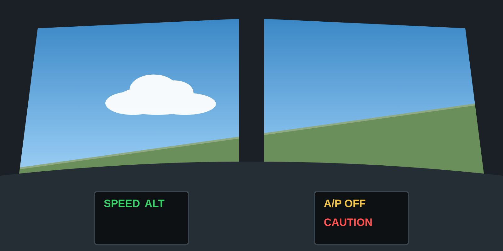

Lesson 13: Automation, Flight Control Laws and System Failures
Lesson 13 of 24 · about 8 min
Learning objectives
Describe how automation can mask or create a developing upset.
Explain the effects of autopilot disconnect, mode confusion and degraded flight control laws.
Apply automation management principles to upset prevention.

Automation can mask a developing upset — until it disconnects.
Advantages and limits of automation
Automation flies precisely and reduces workload, which helps prevent many upsets. But it can also:
mask a developing problem — the autopilot holds the aircraft against an asymmetry, ice accretion or mis-trim until it reaches its limit and disconnects, handing the pilot an aircraft that is already out of trim;
create an upset — an unexpected mode, a faulty sensor driving the autothrust or a flight control system, or a disconnect at a critical moment;
reduce the pilot's awareness of the aircraft's energy state and the manual flying skill needed to recover.
Mode awareness
The flight mode annunciator (FMA) shows what the automation is actually doing. Read it, announce changes, and cross-check.
Watch for modes where the autothrust is not controlling speed — such as idle-thrust descent modes, "hold" modes, or after the autothrust has disconnected.
If the automation does not do what you expect, reduce the level of automation or fly manually — do not spend time reprogramming at low altitude.
Autopilot disconnect
An unexpected disconnect, with its aural warning, is a classic trigger for startle. Be ready for an out-of-trim condition. The pilot flying takes control smoothly, announces it, and stabilises the attitude and speed before doing anything else.
Fly-by-wire control laws
In normal law, envelope protections typically limit bank, pitch, load factor, angle of attack and overspeed.
Failures — such as unreliable air data or certain system faults — can cause the system to revert to an alternate or direct law, in which some or all protections are lost. Handling may also change.
In a degraded law, the aircraft can be stalled. Stall warning and recovery become the pilot's responsibility.
Other system-induced threats
Engine failure or asymmetric thrust at low speed — yaw and roll that the autopilot may initially hide.
Flight control malfunctions — jammed or runaway trim, spoiler or rudder problems. Know the memory items.
Instrument failures — compare the attitude indicators with each other and with the standby instrument.
Principle
Use the level of automation that best suits the situation — and always be able to fly the aircraft manually.
Key takeaways
Automation can mask a developing upset until it disconnects — expect an out-of-trim aircraft.
Read and announce the FMA; reduce automation if it does not do what you expect.
In degraded fly-by-wire laws, protections may be lost and the aircraft can stall.
Knowledge check
The autopilot disconnects unexpectedly in cruise. What should the pilot flying do first?
Re-engage the autopilot immediately
Take control smoothly, announce it, and stabilise attitude and speed
Check the circuit breakers
Call the cabin crew
Answer: B. Fly the aircraft first: take control, announce it, and stabilise the attitude and speed, expecting a possible out-of-trim condition.
Training material only. It does not replace the Aircraft Flight Manual, FCOM, QRH, MEL or the Domestic Airlines Operations Manual, which always take precedence.